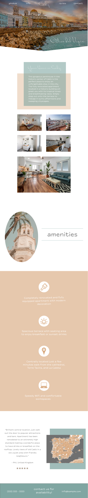
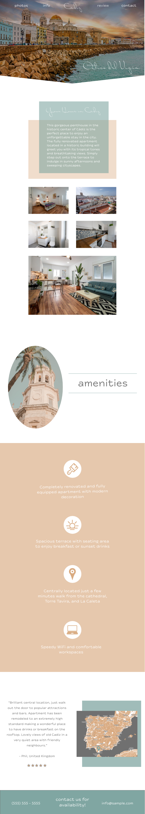

Vacation Rental Website Build · Content Review, SEO, Web Design, Web Development · 2020
#1 Design Phase
In the first step, we decided on the look and feel of the website, selected a target audience, reviewed some styling considerations, and created site mockups. Since we were starting from scratch here, we began with a mood board and created personas to identify and narrow down brand personality. Next, we finalized the color scheme and typography and wireframed the responsive design before creating custom icons and a full design comp.
 

#2 Content & SEO Phase
Next, we did a full review of the content and ran an SEO report. Here we optimized the copy to make sure the website is easy for its target audience to find. Because the content was originally translated from Spanish into English, there were a few tweaks that needed to be made in order for the language to flow better and improve SEO.
#3 Development Phase
Once we agreed upon a design and finalized the content, it was time to build the website! This began with HTML coding the bare bones of the site and later adding style with CSS. Once the site was built, we did a round of revisions to make sure everything was perfect before launching it live.
By successfully completing these three phases, we were able to meet the objectives of this project. Now this property has its own website with contact information so reservations can be made directly. It’s also now much easier for potential renters to find their apartment and get the basic information in one reliable place.
“From start to finish, Sam guided us through every step and was in constant communication which made the whole website creation process really easy. She was able to understand the feel of our property and the experience it offers guests, translating it into a beautiful site. Now, in addition to the reservations we receive from other platforms, we’re able to receive bookings directly from guests, avoiding the extra fees that come with third-party sites. Sam was a delight to work with and we couldn’t be happier with our new apartment rental landing page!”
-Ático del Vigía